伊豆極楽苑/静岡県天城湯ヶ島町
伊豆半島。
我々の想像力の地平線を超えたキワモノ観光スポットが目白押しのこの地に地獄極楽を堪能する施設がある。
その名は伊豆極楽苑。名前からすると極楽めぐりだけかと思われるが決してそんな事は無い。極楽めぐりだけで、観光客など来る筈はない。地獄極楽両方とも、というか地獄メインできっちりあの世の様子を教えてくれる。
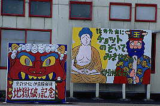 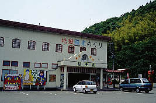
で、外観。地獄極楽めぐりというヘビーな内容の割には正直云って場末の観光地風情。これから起こるであろうあんな事やこんな事などお首にも出さないファンシーな造りに作り手の機微を感じる。それに追い討ちをかけるようなポンチな音楽とアナウンスがエンドレスで流れている。
手描きの看板のチープ具合に落涙。
中に入るとはじめに畳敷きの広間があって、まずはそこであの世についてのレクチャーを受ける。
ちなみにここは家族経営の観光施設で、内部の地獄極楽ジオラマは全部この一家が総出で作ったという。
参考にしたネタ本は「往生要集」と「地蔵十王経」。
というわけでレクチャー担当はお母さん。流れるような名調子に乗せて死後の世界の説明が始まる。
曰く、死後三途の川を渡ると7日おきに7つの裁判が行なわれ、49日目に判決が下るという。
正面には閻魔大王などの人形や説明のパネルなどが並ぶ。
「49日のスピード裁判！」など独自の言語感覚を駆使したコピーがニクイ。
で、行き先は地獄界、畜生界、餓鬼界、阿修羅界、人間界、天界の6つ。
その中で浮気の裁判というものがあり、男は猫が女は蛇が判定するそうだ。方法は想像に任せます。
隣にいた汚れカップルがこれを聞いてグフひヒェグボグボと意味不明の笑い声をあげていた。何なんだお前等、生きてる内から畜生道かよ
・・・
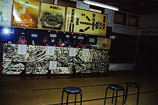 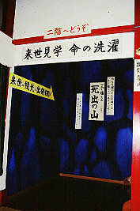
一通り説明が終わるといよいよ「あの世」ツアーの始まりだ。
階段を登ると薄暗い青い照明の中、最初のジオラマが現れる。三途の川の風景だ。
「家族皆ででつくりました〜」というコメントから「欽ちゃんの仮装大賞」レベルのものを想像していたので、
正直いってこんなに緻密に作られているとは思わなかったので驚いた。
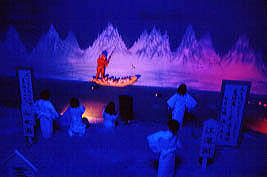 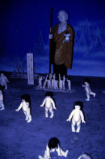
次はその中の賽の河原ジオラマ。賽の河原エレジーなる歌詞がありました。人形があまりにリアルなのでチトきつい。
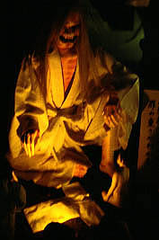 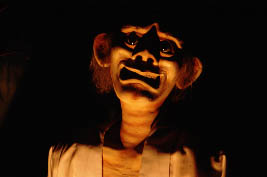
そして奪衣婆。ここまでがあの世の入口みたいなものであろうか。
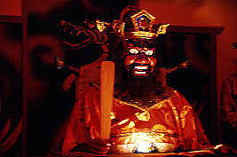 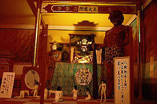
次の部屋は赤い照明に照らされた閻魔の庁。生前の行いを判定する裁判所のシーンだ。
浄玻璃の鏡。「嘘をついてもビデオテープを見せられてすぐばれる」そうだ。
で、判決が下ると六道の辻を経てまずは緑色に彩られた餓鬼道の部屋へ。
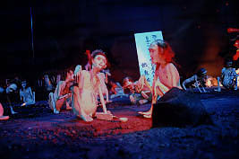
ここは食べ物を粗末にした人が行くというところ。食べ物は食べようとすると火に変わるという恐ろしいところ。仕方なく糞尿を食するそうです。辛すぎる世界。
部屋の照明が又、赤に転ずる。ここからがいよいよ地獄界である。そうかさっきの餓鬼界は地獄じゃないのか。うむ〜。
赤い光に照らされた地獄の風景とは・・・
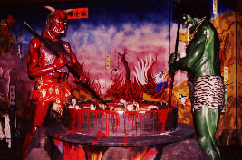 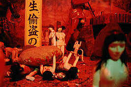
凄い、下手なアングラ芝居を見ているようなおどろおどろしさだぞ。
2メートル位の鬼が10数センチ程度の人間にありとあらゆる「お仕置き」をしている。
かなりグロいシーンを緻密な描写で仕上げているだけに圧倒される。このへんはここのオーナー（お爺ちゃんだそうな）の異常なまでのこだわりが見て取れて興味深い。
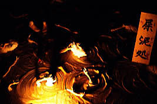
館内に流れる暗〜いトーンのナレーションと音楽もダークな気分にさせるのに一役買ってくれる。
等活地獄、黒縄地獄、阿鼻地獄などの責め苦ジオラマや地獄絵などが続き、だんだん具合が悪くなってきた。
と同時にこれを家族みんなで造っている光景を想像してしまう・・・
「母ちゃん、ここの血の池を仕上げたら飯にすっか」
「太郎（仮名）、夕飯は何にする？」
「わーい、ボク馬刺し〜、お爺ちゃんは？」
「わしゃあ、チゲ鍋がいいなあ〜」
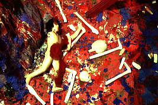 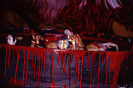
・・・さて、そんなこんなで地獄めぐりも出口である。
閻魔庁での判定機、浄玻璃の鏡が置いてある。これであなたの来世を占おうという趣向。
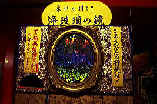 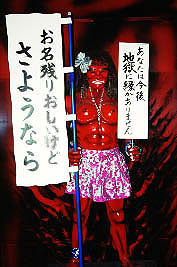
そして出口にはギャル鬼が。「あなたは今後地獄に縁がありません」だって。
つくりものとは判っていても少しほっとする私であった。
地獄めぐりが終わると次は仏様の胎内めぐりがはじまる。
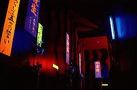 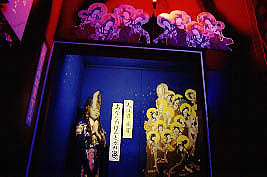
といってもブラックライトで照らされた廊下に「不殺生、不偸盗、不邪淫、不妄語、不飲酒」といった札が懸けられ、その5つを守ろう、というもの。何故こんなものをブラックライトで照らすんだろう・・・
で、色っぽい観音様に導かれスペーシーな回廊を抜けると極楽ジオラマに到達する。
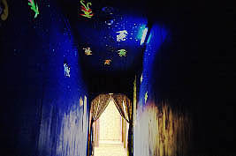
そこは仏様を中央にいだいた金ぴかの極楽世界が展開されている。
「温度ハワイと同じ」で「家賃敷金礼金ナシ 衣類食事全部タダ」だそうである。
見れば建物は五重塔や金閣寺の金のレプリカ、観光地の土産屋で良く見かけるアレである。
気になるのはこの極楽風景に人が一人もいない事。もしかして極楽って誰も行けないところなのでは・・・
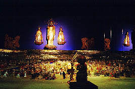 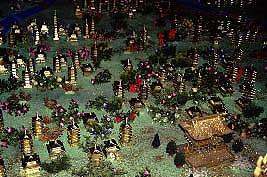
この極楽ジオラマの部屋は最初に入った畳敷きのレクチャールームとカーテン一枚隔てた部屋。
カーテンの向こうからは浮気の裁判云々のくだりでまた酔っぱらいオヤジどもの下卑た笑い声がきこえてくる。
一旦建物の外に出て、裏手に回ると今度は「秘宝展天上界 愛の四十八手」。ま、秘宝館ですな。
今、不邪淫の誓いをしてきたばっかりなのにこの節操のなさったら、もう。
という訳でこれにて地獄極楽+秘宝ツアーも終了。
全体の印象としては、地獄のリアリズムに対して極楽の現実感の無さが印象的だった。
というか元々「往生要集」の中でも極楽のイメージというのがあまり具体的でなく、地獄の対局としての世界という程度の認識でしかないのだ。
地獄極楽という思考の中には極楽の要素はほとんどなく、地獄のマイナスイメージによって構成されている、いわば地獄の添え物状態なのだろう。
最後に、こう云った味のあり過ぎる施設の割には御主人も奥さんもフレンドリー＆ジェントリーだった事を付け加えておこう。
2000.5.
珍寺大道場 HOME